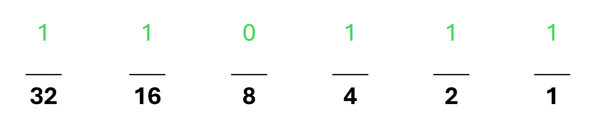

| # | Name | Score | Date |
|---|---|---|---|
| 1 | TempUser | 8 | May 20, 2021 |
| 2 | User | 6 | June 2, 2021 |
| 3 | Gunter Spears | 3 | July 3, 2020 |
| # | User | 6 |
The Binary Counting system is set up in the base2 system. The base10 system is the most well known, going from 0-9 before repeating the pattern. Binary, however, only uses 0's and 1's.
When counting in base 10, you start with a single decimal place. Upon reaching 9, a new decimal place must be created, the tens place, representing 101. When both places are filled again, another place is created, representing 102.
When counting in base 2, the same decimal place pattern is used. However, since we only have 0-1 to work with, the decimal places increase in powers of 2. As such, we have the 1s place (20), the 2s place (21), the 4s place (22), and so on,counting up in the powers of 2.
This image below shows how you would express the number 55 in both base10 and in base2

In base10, 55 is expressed simply as five 1's, and five 10's, and 0 of the other places. in Base2, however, 55 is expressed as one 1, one 2, one 4, zero 8's, one 16, and one 32.
For the purposes of the game, we won't use more than the 128's place. An easy way to determine a binary conversion is to count down the places. For example, using 55 again, I won't use 64 or anything bigger, so I know that I have a 32. 55 - 32 is 23. 16 is the next place, so I will use a 16. 23 - 16 is 7.
Because 7 is less than 8, I won't use the 8's place, so I drop down to the 4. 7 - 4 is 3. I will use the 2's next, leaving me with a 1, which I will use the 1's place for.
This leaves us with 55 = 110111